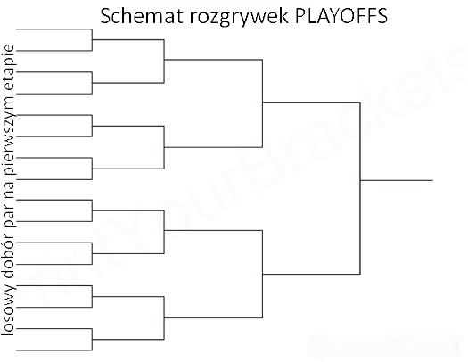

Rozgrywki Playoffs – wyłanianie najlepszych¶
Czy playoffy nagradzają zawsze najlepszych – symulacja Monte Carlo¶
Wstęp¶
Szczegółowy opis zagadnienia:
{kind=link}
rzecz dotyczy rozgrywek sportowych. Załóżmy, że pewne drużyny rywalizują w ramach rozgrywek ligowych. Po zakończeniu fazy ligowej ropozczyna się walka o mistrzostwo, która odbywa się w oparciu o formułę playoffs, przy czym przyjmiemy, że reguły tej fazy playoffs są następujące (nasze założenia):
- Do fazy playoffs wchodzą tylko najlepsze drużyny; ponieważ mecze w playoffs rozgrywane są parami, to by zapewnić, że na każdym etapie mamy parzystą liczbę współzawodniczących drużyn, zakładamy, że liczba drużyn zakwalifikowanych do playoffs jest potęgą liczby 2 – u nas \(2^6=64\) drużyny;
- Zakładamy, że drużyny można dobrze uporządkować od najlepszej do najgorszej, tzn. zakładamy, choć nikt tego porządku nie zna, że jednak taki porządek istnieje, czyli istnieje drużyna która jest najlepsza (pod względem poziomu gry i skuteczności) – tej drużynie w naszych rozważaniach przyporządkujemy etykietę ‘1’, a następnie drużyny: druga (oznaczona przez ‘2’), trzecia (oznaczona ‘3’) itd. aż do najsłabszej drużyny oznaczonej przez ‘64’;
- Zakładamy, że na pierwszym etapie rozgrywek playoffs drużyny łączone są w pary losowo; pary są numerowane;
- Na każdym etapie playoffs każda z drużyn gra tylko z jednym przeciwnikiem (z jedną drużyną, w której jest w parze); drużyna przegrana odpada z rozgrywek a wygrana przechodzi do kolejnego etapu (z wyjątkiem półfinałów, gdzie przegrani nie odpadają, lecz walczą o 3. miejsce)
- Po rozegraniu danego etapu playoffs, w kolejnym etapie tworzone są nowe pary w ten sposób, że wygrany z pierwszej pary gra z wygranym z drugiej pary, wygrany z trzeciej pary gra z wygranym z czwartej pary itd., przy czym tak utworzone nowe pary są również na nowo numerowane i rozgrywany jest kolejny etap;
- Przyjmujemy, że drużyna lepsza zawsze wygrywa z drużyną słabszą, czyli że porządek opisany w punkcie 2. oznacza, że drużyna ‘1’ zawsze wygrywa z wszystkimi (nawet jeśli ma ,,gorszy dzień”, to wygrywa), drużyna oznaczona ‘2’ zawsze wygrywa z wszystkimi z wyjątkiem drużyny ‘1’, itd.
System rozgrywek playoffs ma za zadanie wyłonić najlepszych. Pytanie czy faktycznie tak jest? Nietrudno wykazać, że przy przyjętych założeniach, drużyna najlepsza zawsze wygrywa playoffy (zdobywa mistrzostwo), ale ciekawe jest zagadnienie, kto zdobywa miejsce drugie i trzecie? Jak często zdarza się, że rozgrywki playoffs odzwierciedlą faktyczny, choć nieznany porządek i najwyższe miejsca zdobywają odpowiednio drużyny ‘1’, ‘2’ i ‘3’. Można się domyślić, że czasem w wyniku losowego doboru par na pierwszym etapie, drużyna oznaczona ‘2’ trafi na drużynę ‘1’ wcześniej niż w finale i przegra odpadając z dalszych rozgrywek (czyli drużyna ‘2’ może w ogóle nie znaleźć się na podium). Możemy też zadać pytanie, czy np. jest prawdopodobne, żeby dziesiąta pod względem poziomu gry i skuteczności drużyna zdobyła wicemistrzostwo?
Spróbujmy zapisać kod programu, który będzie symulował opisane rozgrywki playoffs. Będzie to typowa symulacja Monte Carlo, w której przyjmuje się pewne założenia dotyczące zachowań uwzględnianych obiektów oraz zakłada się losowy układ początkowy i następnie uruchamia się symulacje reprezentujące mechanizmy rządzące działaniem systemu i obserwuje się wyniki.
Rozegranie pojedynczego etapu rozgrywek playoffs¶
Rozbijmy pisanie programu realizującego naszą symulację na kilka modułów. Zacznijmy od krótkiego modułu odpowiedzialnego za rozegranie pojedynczego etapu rozgrywek playoffs. Napiszemy ten moduł w postaci ,,funkcji”, która na wejściu (jako argument) dostaje listę zespołów poukładanych tak, że pierwsza drużyna z listy ma grać z drugą, druga z trzecią itd., a na wyjściu (jako wartość funkcji) zwraca listę zwycięzców danego etapu (lista zwycięzców jest oczywiście krótsza o połowę od listy wejściowej). Ponieważ do oznaczenia drużyn użyliśmy kolejnych liczb naturyalnych a ‘1’ to najlepsza drużyna, to wyłonienie zwycięzcy a danej pary (a,b) polega na sprawdzeniu, która etykieta jest mniejsza, czyli, że mecz wygrywa drużyna, która wskazuje min(a,b).
UWAGA! W poniższym kodzie w drugiej linii użyto pewnego sprytnego zapisu, który z pojedynczej listy, np. drużyny=[14, 8, 37, 2, 12, 23, ...], tworzy dwie rozłączne listy a następnie z nich tworzy wiele par postaci [14, 8], [37, 2], [12, 23], ...
Przy tworzeniu takich par posłużono się funkcją zip(...), która działa na dwóch listach tak, jak zamek błyskawiczny spinający/łączący odpowiadające sobie elementy w dwóch listach. Pierwszą listę tworzą elementy listy o nazwie ‘druzyny’ zaczynając od elementu początkowego aż do ostatniego osiąganego w tej liście skacząc co drugi. Drugą listę, czyli drugi argument funkcji zip tworzą elementy listy o nazwie ‘druzyny’ zaczynając od elementu drugiego aż do ostatniego osiąganego w tej liście skacząc co drugi [pamiętamy, że elementy listy w Pythonie są numerowane od zera, więc drugi element listy ma numer 1].
Jako wynik działania funkcji rozegraj_etap na przykładzie przedstawionym powyżej, otrzymamy nową listę postaci: [8, 2, 12, ...] i oczywiście w dalszej części powtórzymy w pętli wywołanie funkcji rozegraj_etap na takiej nowej liście (tworząc nowe pary i “rozgrywając” nowe mecze).
Symulacja całych rozgrywek playoffs¶
Spróbujemy teraz napisać funkcję, która będzie realizować rozegranie playoffów. Do tego celu oczywiście wykorzystamy wcześniej napisaną funkcję rozegraj_etap(...).
Przypomnijmy, że przyjęliśmy założenie, że w pierwszym etapie playoffs mamy pewną liczbę zespołów, która jest potęgą dwójki, i że te zespoły są uporządkowane, ale do pierwszego etapu są łączone w pary losowo. Będziemy zatem przekazywać do naszej funkcji jako argument liczbę ‘n’, która wskazywać będzie jaką potęgę dwójki mamy rozważać, następnie utworzymy listę zespołów numerując je po kolei od \(1\) do \(2^n\) a do rozegrania pierwszego etapu (przed pierwszym użyciem funkcji rozegraj_etap(...)) zastosujemy funkcję shuffle(...) która losowo wymiesza elementy listy ‘druzyny’. To losowe wymieszanie spowoduje, że dobór w pary na pierwszym etapie będzie losowy zgodnie z założeniami. Listy drużyn z wszystkich etapów rozgrywek będziemy zapisywać i przechowywać jako ‘playoff_etapy’.
Wiadomo, że należy wielokrotnie skorzystać z funkcji rozegraj_etap(...). Po chwili zastanowienia dojdziemy do wniosku, że aby wyłonić mistrza w playoffach, gdzie zaczyna rozgrywki \(2^n\) drużyn, trzeba rozegrać \(n\) etapów. Tym razem jednak zamiast korzystać z tej wiedzy i uruchamiać \(n\)–krotnie funkcję rozegraj_etap(...) w pętli ‘for’, wykorzystamy inny typ pętli, mianowicie pętlę ‘while’ podając warunek, że chcemy powtarzać zawarte w pętli instrukcje tak długo, aż na polu bitwy pozostanie tylko jedna drużyna (zwycięzca tytułu mistrzowskiego), czyli dopóki liczba drużyn po rozegraniu etapu jest większa od 1.
Widać z wyników powyższego programu, że funkcja, którą napisaliśmy identyfikuje zwycięzcę (mistrza), ale wicemistrza i drużynę zdobywającą trzecie miejsce musimy jeszcze sami wyłuskać ze struktury, którą zwraca funkcja rozegraj_playoffs(...) – ta struktura jest złożona i jest to ,,lista list”. Musimy ostrożnie odwołać się do poszczególnych elementów tych list składowych pisząc program do wychwytywania miejsc na podium:
Wychwytywanie drużyn, które znalazły się na podium¶
Jak często dana drużyna zajmuje trzecie miejsce¶
Wykorzystajmy wszystkie napisane funkcje do zbadania problemu przedstawionego na początku – która drużyna i jak często zdobywa trzecie miejsce w rozgrywkach playoffs? Załóżmy że powtórzymy symulację, czyli rozegramy całe playoffy 10 000 razy. Przedstawmy wyniki symulacji na wykresie:
Z powyższego wykresu widać, że drużyna oznaczona ‘3’ w około 33% rozgrywek playoffs zdobywa miejsce trzecie, ale np. średnio co czwarte playoffy kończą się tak, że druga drużyna pod względem umiejętności i skuteczności zajmuje miejsce trzecie. Widać z wykresu, że wprawdzie rzadko, ale zdarza się, że drużyna ‘10’ czy nawet ‘11’ zdobywa miejsce trzecie.
Wynika z przeprowadzonych symulacji, że schemat rozgrywek playoffs przy przyjętych założeniach, jest skuteczny w wyłanianiu drużyny mistrzowskiej, ale zdecydowanie nie jest już tak skuteczny i sprawiedliwy we wskazywaniu wicemistrza lub trzeciej drużyny na podium.
Zachęcamy do ,,pobawienia się” powyższym kodem programu!